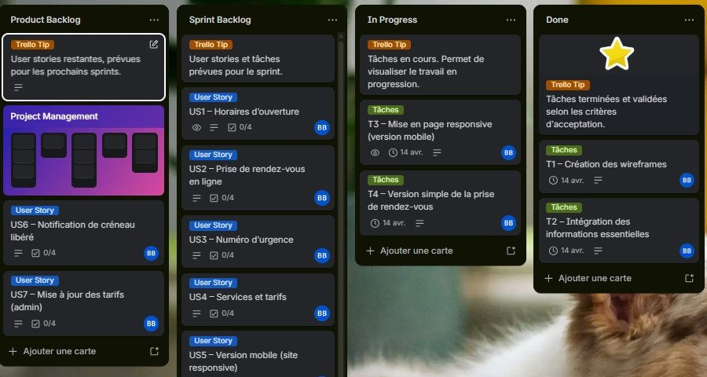

Agile-Vet: MVP planning, backlog design and a Daily Scrum simulation
Simulated training project, Agile certification RS5487 (France, 2026)
How I scoped the first release of a clinic website, chose what to leave out and why, and, as Product Owner in a live Daily Scrum, identified two impediments and defined the next actions.
Read the case study